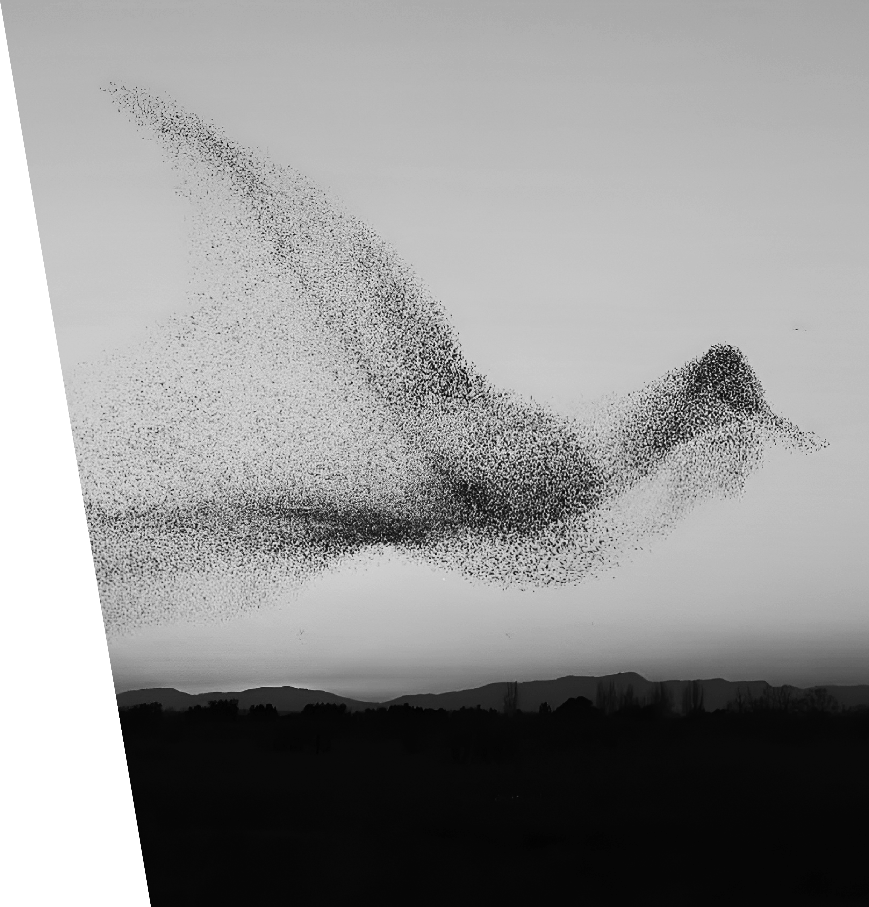

A murmuration is a natural phenomenon in which hundreds or thousands of birds, most commonly starlings, fly together in highly coordinated and flowing formations. As they move through the sky, the flock continuously shifts shape, forming waves, spirals, and cloud-like patterns that appear almost choreographed.
Despite the complexity of these movements, there is no single leader guiding the flock. Each bird reacts to the motion of a few nearby birds and adjusts its speed and direction in response. Through these local interactions, the entire group forms a collective system that moves with remarkable precision and fluidity.
Scientists believe murmuration helps protect birds from predators by confusing attackers and allows the flock to remain cohesive while gathering before roosting. Beyond biology, murmuration has become a powerful metaphor for collective intelligence, harmony, and emergent patterns. The phenomenon has inspired artists, choreographers, designers, and scientists across many fields.
Murmurations most often occur at dusk, when starlings gather before settling into their night roosts. They are commonly seen during autumn and winter, especially in open landscapes such as wetlands, farmlands, coastal areas, and grasslands.
